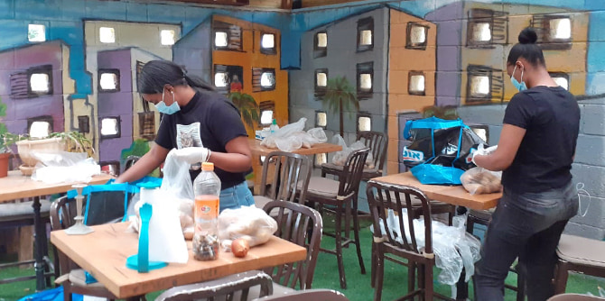
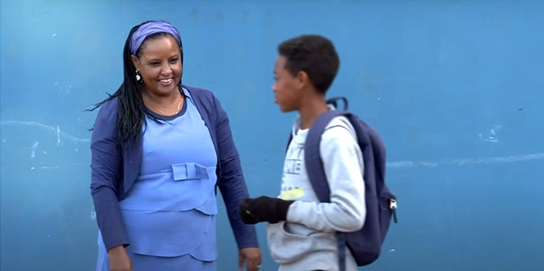
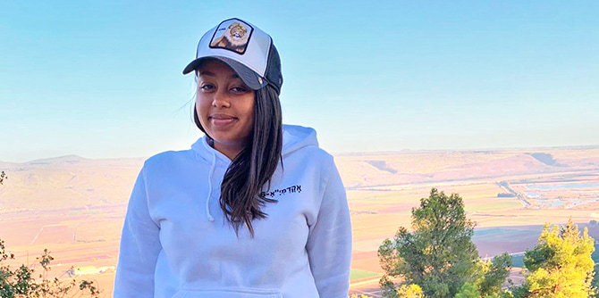

The Fidel Association was founded by Dr. Nigist Mengesha to advance the educational and social integration of Ethiopian-Israelis. Currently, Dr. Mengesha serves on the executive board of the Fidel Association and she is the director of the department of education, youth and sport in the municipality of Rosh HaAyin. She founded the Fidel Association not only to address the challenges of Ethiopian-Israelis, but also those of the society at large, with a view that social issues are shared by many different populations.
For over 14 years, Fidel ("alphabet" in Amharic) has operated youth centers for Ethiopian-Israelis in neighborhoods throughout Israel. These centers provide youth with a warm, supportive home for cultural and social enrichment, while encouraging them to take part in social activism. With the sudden coronavirus lockdown, however, the youth centers were forced to close. The youth now found themselves without their regular activities and without interactions with other teens and caring adults. At the same time, schools were shut down, making some youth more susceptible to dropping out of all frameworks.
The crisis plunged much of the Ethiopian community in Israel into desperate circumstances, as many already live below the poverty line and were now losing their jobs, either temporarily or permanently. Many in the community have a large number of children and live in small, crowded apartments, which can be a breeding ground for domestic violence. Daily survival became a major concern.

At the outset, Fidel's management staff drew up an emergency plan to ensure that the organization would be poised to meet the community’s most pressing needs. As part of the plan, Dr. Mengesha, a graduate of the Mandel School for Educational Leadership, initiated an inspiring project to recruit youth – primarily from Ashkelon, Lod, Ramla and Afula – to create an “emergency force” that would actively assist the community. The plan would ensure that the teens were meaningfully engaged and in regular contact with the center’s staff, as well as helping to enhance their sense of personal value by feeling needed and connected. The Mandel Foundation gave their support for this emergency initiative to help the Ethiopian community weather this very difficult period.
Under the supervision of Fidel's staff, the youth were tasked with mapping the needs of people in their local community during the lockdown. Each young volunteer adopted two elderly members of the community and contacted them daily to gauge their immediate needs and to deliver food, medication and other essentials. The youth also went food shopping for single mothers who were unable to leave their children alone during the lockdown. In addition, the youth cooperated with the Lev Echad organization and harvested food from the fields of a local farmer to distribute to the needy.

Another objective of this initiative was to help raise the confidence that these young people have in their own capabilities, while enhancing the way they are viewed by others in the community.
The plan also included purchasing computers for those families who do not own one, so that the children could continue their school education remotely. It also provided online tutoring by mentors and youth center staff for those children experiencing language, educational or technological gaps.
In order to provide the community with critical information in Amharic about coping with the pandemic, Fidel also operated a hotline and the staff underwent special training with ERAN, a non-profit that provides emotional first aid by telephone and internet, so that they were prepared for all scenarios.

One illustration of the enormous impact that the Fidel youth centers can have on Ethiopian youth is demonstrated through Natali's story:
Natali is a 17-year-old student from the ORT Lilienthal high school in Ramla. She attended a Purim program at the Fidel Ramla Youth Center: "I was a bit apprehensive about coming to the center, because it's not in a good area of the city, but my friends convinced me that it would be worth it." Natali enjoyed herself so much that she decided to return, and soon made a strong connection with the center's manager, Nitzan Tafta, and her fellow teens.
Natali was well aware of the dangers that her fellow teens were regularly exposed to on the streets of Ramla and she began to take an interest in the community policing program. She developed a bond with Amir Adamso, an Ethiopian-Israeli active in the community policing unit, who taught her how to intervene effectively with youth at risk. Not surprisingly, during the crisis, she was the first to volunteer for the youth team that delivered food and essentials to needy families in the Weizman neighborhood of Ramla. Natali now plans to serve in the IDF Border Police upon finishing high school and to go on to university to study criminology.

With the recent relaxing of social distancing regulations, Fidel's youth centers have resumed their regular activities in accordance with the new guidelines. Personal protective equipment (PPE) was purchased and distributed to all seven youth centers in Israel. In early June, a professional development day for the youth center's staff and management enabled them to review the coronavirus emergency program, share learning experiences, and discuss the anticipated challenges after the long period of social distancing. A summer program is planned during which the ongoing health recommendations will be maintained. In the meantime, Fidel will continue to offer enrichment and direction to more than 600 youths between the ages of 13-18 in the cities of Beer Sheva, Ashkelon, Sderot, Petah Tikva, Ramla, Lod and Afula.
All photos and video courtesy of the Fidel Association.
{kind=link}
{kind=link}
{kind=link}